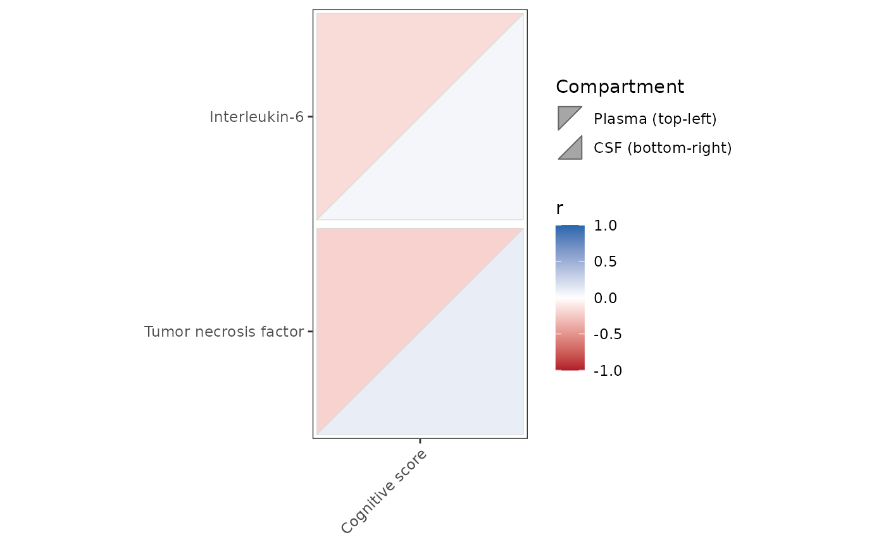

Plot correlations within two strata as split triangles
Source:R/PlotSplitCorrelationHeatmap.R
PlotSplitCorrelationHeatmap.RdEach cell represents the same predictor-outcome pair in two strata of long
data. The first selected stratum occupies the top-left triangle and the
second occupies the bottom-right triangle. Correlations are calculated by
PlotCorrelationsHeatmap() independently within each stratum, including
covariate adjustment and FDR correction.
Usage
PlotSplitCorrelationHeatmap(
data,
predictor_vars = NULL,
outcome_vars = NULL,
split_var,
split_levels = NULL,
covariates = NULL,
method = "pearson",
Relabel = TRUE,
TreatOrdinalAs = "Categorical",
min_n = 3,
eps = 1e-12,
fdr_scope = c("matrix", "per_outcome", "per_predictor"),
IncludeTrendSymbol = FALSE,
interactive = c("none", "plotly")
)Arguments
- data
A long data frame with one column per measured variable and a column identifying the stratum of each record.
- predictor_vars, outcome_vars
Character vectors passed to
PlotCorrelationsHeatmap(). Predictors are rows and outcomes are columns. Defaults use numeric predictors (excludingsplit_var) and the same variables as outcomes.- split_var
Name of the column identifying strata.
- split_levels
Two observed values of
split_var, in triangle order. If omitted, exactly two observed values are required; factor order is respected, otherwise first-observed order is used.- covariates, method, Relabel, TreatOrdinalAs, min_n, eps, fdr_scope, IncludeTrendSymbol
Passed to
PlotCorrelationsHeatmap(). FDR correction is performed separately within each stratum, before any display alignment.- interactive
Either
"none"(default) or"plotly". Static plots are always returned; Plotly widgets require the suggested plotly package.
Value
A list with Unadjusted and FDRCorrected, each containing a
static plot and named lists of matrices r, p, and npairs, indexed
by split level. p and p_fdr alias these branches. Correlations holds
the source results; Results contains one row per stratum and cell;
Metadata records settings, axis order, counts, and unavailable results.
Optional widgets are in Interactive$Plotly$Unadjusted and
Interactive$Plotly$FDRCorrected.
Details
Stars test the correlation within each stratum, not the difference between
strata. This function performs no between-stratum comparison test. Missing
split values are excluded with a warning. Unavailable correlations remain
visible as gray triangles, with counts and status in Results.
Unadjusted refers to raw p-values; requested covariate adjustment is
retained in both output branches.
Labels are inherited from the source correlation results (normally attached
from a codebook using RevalueData()). Variable identifiers, rather than
labels, determine cell identity, so duplicate display labels are supported.
Examples
set.seed(42)
df_Example <- data.frame(
Compartment = factor(rep(c("Plasma", "CSF"), each = 30)),
IL6 = rnorm(60), TNF = rnorm(60), Cognition = rnorm(60),
Age = runif(60, 25, 75)
)
df_Example$IL6 <- sjlabelled::set_label(df_Example$IL6, "Interleukin-6")
df_Example$TNF <- sjlabelled::set_label(df_Example$TNF, "Tumor necrosis factor")
df_Example$Cognition <- sjlabelled::set_label(
df_Example$Cognition, "Cognitive score"
)
result <- PlotSplitCorrelationHeatmap(
df_Example, predictor_vars = c("IL6", "TNF"),
outcome_vars = "Cognition", split_var = "Compartment",
split_levels = c("Plasma", "CSF"), covariates = "Age"
)
result$FDRCorrected$plot

# Optional interactive version:
# result <- PlotSplitCorrelationHeatmap(
# df_Example, c("IL6", "TNF"), "Cognition", "Compartment",
# covariates = "Age", interactive = "plotly"
# )
# result$Interactive$Plotly$FDRCorrected